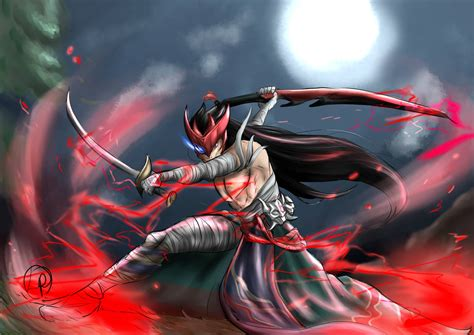
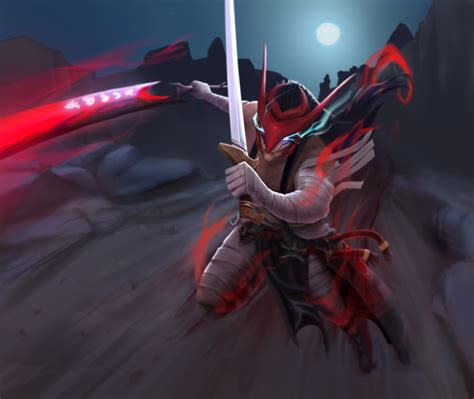
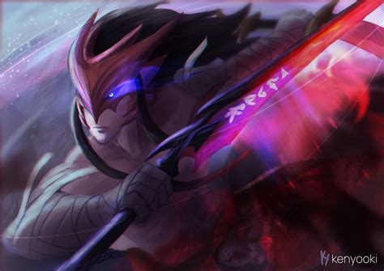

Yone - O Caçador de Máscaras
Yone é um campeão de League of Legends, dividido entre o mundo dos vivos e o espiritual. Irmão de Yasuo, ele foi morto e ressuscitado com uma missão: caçar entidades malignas conhecidas como Azakana. Armado com duas espadas — uma da vida e outra da morte — Yone é guiado pelo dever e pelo destino.
Galeria de Imagens



Contato
Este site é um projeto de fã, homenageando o campeão Yone de League of Legends.